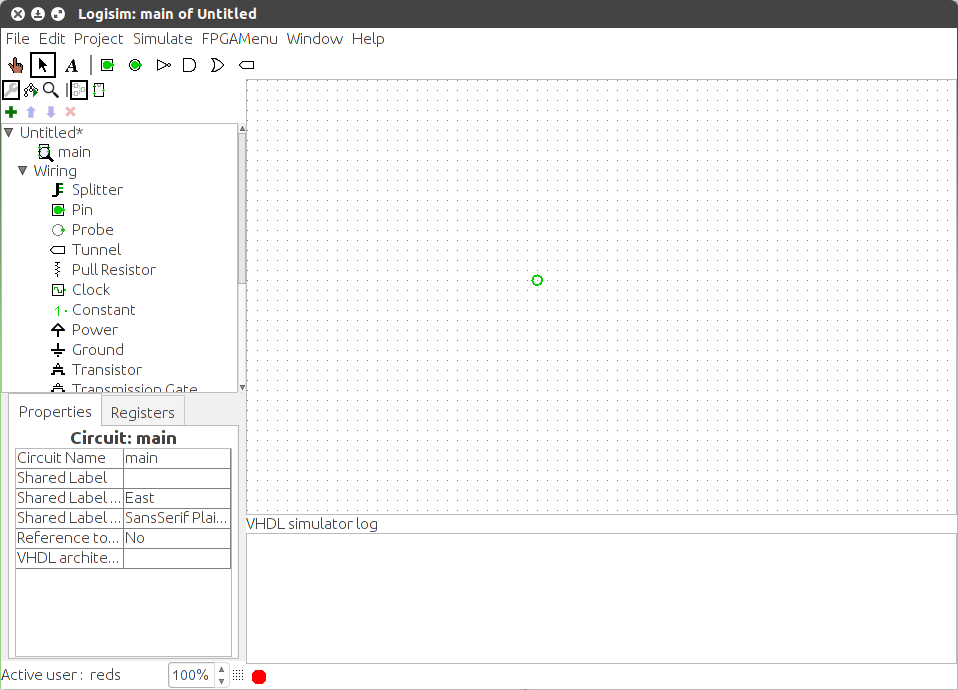

Моделирование VHDL
Программа Logisim не поддерживает прямое нативное моделирование кода VHDL. Вместо этого для моделирования в качестве фонового процесса используется внешний профессиональный пакет QuestaSim.
Включение моделирования
Активировать фоновое моделирование можно через главное меню | Моделирование | > | Моделирование VHDL включено |. После этого в нижней части холста (панели проектирования) откроется консоль моделирования.
Текущий статус интеграции отображается в виде индикатора в нижней строке лога процесса моделирования:

Возможные состояния:
-
 Отключено — консоль скрыта, интеграция не используется;
Отключено — консоль скрыта, интеграция не используется;
-
 Включено — режим активирован, но фоновый процесс QuestaSim ещё не запущен;
Включено — режим активирован, но фоновый процесс QuestaSim ещё не запущен;
-
 Запуск — выполняется инициализация и запуск процесса QuestaSim;
Запуск — выполняется инициализация и запуск процесса QuestaSim;
-
 Активно — фоновый процесс моделирования успешно запущен и обрабатывает сигналы схемы.
Активно — фоновый процесс моделирования успешно запущен и обрабатывает сигналы схемы.
Примечание: Фоновый процесс моделирования запускается автоматически только в том случае, если режим моделирования включен, а на холсте присутствует хотя бы один VHDL-компонент. Запустить QuestaSim для пустой схемы или схемы без HDL-блоков невозможно.
Перезапуск фонового процесса моделирования
При общем сбросе моделирования в Logisim фоновое моделирование VHDL также сбрасывает своё внутреннее состояние. Однако это лишь очищает текущие сигналы, но не перезагружает сам фоновый процесс QuestaSim и не перечитывает файлы исходного кода VHDL с диска.
Если вы внесли изменения в исходный код VHDL-компонента, вам необходимо вручную перезапустить моделирование VHDL, чтобы обновить модель. Автоматическое отслеживание изменений кода не поддерживается. Полный перезапуск выполняется через команду в меню | Моделирование |.
Временные соотношения
Дискретность и шаг модельного времени в QuestaSim при работе из-под Logisim являются аппаратно зависимыми и непредсказуемыми, так как они напрямую зависят от количества и сложности VHDL-блоков на холсте. Абсолютный минимальный шаг времени составляет 100 нс.
Важное правило: Избегайте использования в VHDL-коде задержек и событий, привязанных к абсолютному времени (например, конструкций вида wait for 10ns;). Допускается использовать только событийное моделирование, управляемое логическими сигналами (например, по фронту тактовой частоты).
Ограничение на количество экземпляров
На данный момент архитектура интеграции поддерживает работу только одного активного экземпляра фонового моделирования VHDL. Если у вас открыто несколько окон проектов Logisim, вам придётся явно отключать моделирование VHDL в первом проекте, прежде чем активировать её во втором. Попытка запустить моделирование параллельно в двух проектах заблокируется и вызовет сообщение об ошибке.
Далее: Моделирование тестовых стендов.